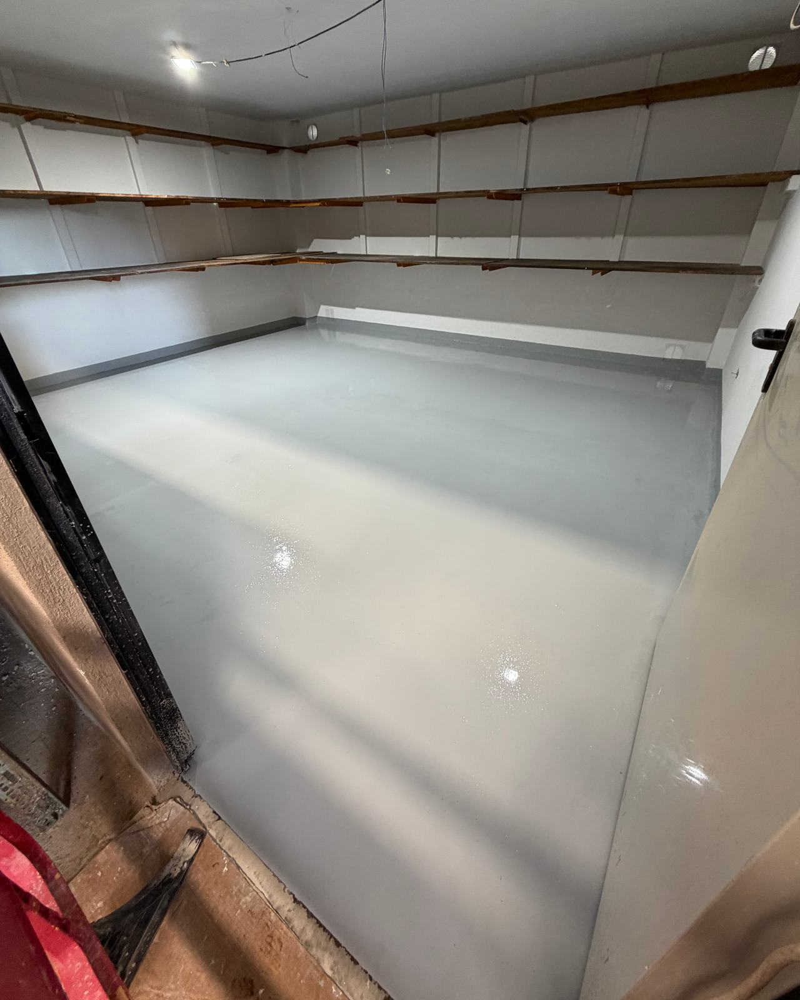
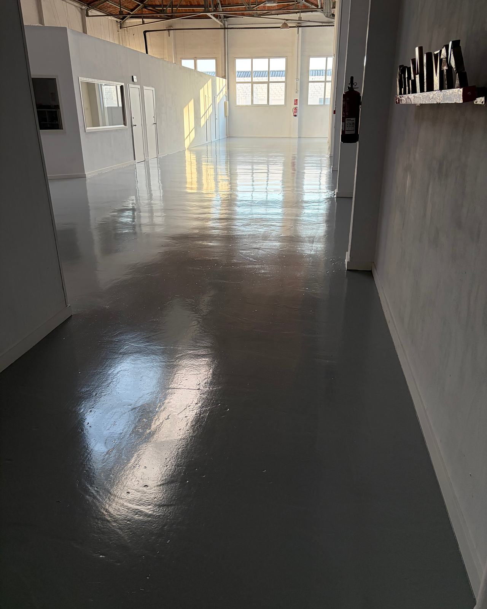

¿Epoxi o poliuretano para el suelo de tu nave?
Las dos son resinas y las dos dan un suelo continuo, sin juntas y fácil de limpiar. Pero no se comportan igual ante un golpe, un cambio brusco de temperatura o el sol. Elegir bien depende menos de la resina que del uso que va a tener el suelo.

- Epoxi: duro, muy resistente a la abrasión y a muchos productos químicos. El habitual en naves y almacenes interiores.
- Poliuretano: más elástico, aguanta mejor los golpes, los cambios de temperatura y, en sus versiones alifáticas, el sol.
- Es frecuente combinarlos: base de epoxi y acabado de poliuretano.
- Ninguna resina salva un hormigón húmedo, sucio o mal preparado.
Dos resinas, dos caracteres
Un pavimento de resina se forma mezclando dos componentes —la resina y el endurecedor— que reaccionan y endurecen sobre el suelo. El resultado es una capa continua, adherida al hormigón, sin juntas donde se acumule la suciedad. Hasta ahí, epoxi y poliuretano se parecen. La diferencia está en lo que pasa después.
La resina epoxi forma una capa muy dura y rígida. Se adhiere muy bien al hormigón, resiste la abrasión de las ruedas y aguanta aceites, combustibles y buena parte de los productos de limpieza industrial. A cambio, es poco elástica: ante un golpe seco o un movimiento del soporte tiende a fisurarse antes que a deformarse, y con la luz del sol amarillea y pierde brillo.
El poliuretano es más flexible. Absorbe mejor los impactos, acompaña pequeños movimientos del soporte y soporta cambios de temperatura que a un epoxi le costarían. Los poliuretanos alifáticos, además, mantienen el color y el brillo al exterior. Su resistencia a la abrasión pura suele ser algo menor que la de un epoxi de buen espesor, y es más exigente con la humedad durante la aplicación.
Dicho de otra forma: el epoxi es una coraza y el poliuretano es una piel. Cuál conviene depende de lo que el suelo vaya a recibir.
Comparativa rápida
| Criterio | Epoxi | Poliuretano |
|---|---|---|
| Dureza y abrasión | Muy alta. Ideal para tráfico de ruedas. | Alta, algo menor a igual espesor. |
| Elasticidad e impacto | Rígido. Un golpe seco puede marcarlo o fisurarlo. | Flexible. Absorbe golpes y pequeños movimientos. |
| Química | Muy buena con aceites, combustibles y álcalis. | Buena; algunas formulaciones aguantan mejor los ácidos. |
| Sol (rayos UV) | Amarillea y pierde brillo. Solo interior. | Los alifáticos mantienen color y brillo al exterior. |
| Cambios de temperatura | Limitado ante choques térmicos. | Mejor; los de poliuretano-cemento, los más resistentes. |
| Aplicación | Más tolerante. Muy buena adherencia al hormigón. | Más sensible a la humedad durante el curado. |
| Uso típico | Naves, almacenes, talleres, parkings interiores. | Exterior, cámaras frías, cocinas industriales, zonas con impactos. |
Cuándo elegir epoxi
El epoxi es la opción lógica en la mayoría de naves interiores: almacenes con carretillas y transpaletas, talleres mecánicos, zonas de producción sin choques térmicos, laboratorios, salas técnicas o aparcamientos cubiertos. Da una superficie dura, fácil de barrer y fregar, y permite marcar en el propio suelo pasillos, zonas de carga y señalización de seguridad.

Tiene además una ventaja práctica: tolera mejor que el poliuretano las condiciones reales de una obra y se adhiere muy bien al hormigón. Por eso las imprimaciones de casi todos los sistemas, incluidos muchos de poliuretano, son epoxídicas.
Donde no conviene es al aire libre o detrás de un gran ventanal: el sol lo amarillea, y en un suelo blanco o gris claro se nota en pocos meses. Tampoco es la mejor elección donde caen objetos pesados con frecuencia o donde se baldea con agua muy caliente.
Cuándo elegir poliuretano
El poliuretano gana cuando el suelo sufre algo que al epoxi le cuesta:
- Sol y exterior. Muelles de carga, rampas, terrazas técnicas o zonas cerca de grandes puertas abiertas. Un acabado alifático conserva el color.
- Choques térmicos. Cámaras frigoríficas, obradores, cocinas industriales y salas que se limpian con agua caliente o vapor. Aquí se usan sistemas de poliuretano-cemento, de gran espesor, pensados justo para eso.
- Impactos. Zonas donde caen piezas, se arrastran palés o se golpea el suelo con frecuencia.
- Soportes con pequeños movimientos, como forjados que flectan un poco o suelos con microfisuras estabilizadas.
- Confort. En zonas donde se trabaja de pie muchas horas, un poliuretano es algo menos duro al pisar y algo más silencioso.
La combinación más habitual reúne lo mejor de cada uno: base de epoxi por su adherencia y su cuerpo, y capa final de poliuretano por su resistencia al sol y al rayado, y porque conserva mejor el aspecto.


Pintura, multicapa o autonivelante: el espesor importa
«Suelo epoxi» puede querer decir cosas muy distintas. La resina importa, pero el espesor y el sistema importan tanto o más:
Pintura o recubrimiento fino
Unas décimas de milímetro. Protege del polvo, facilita la limpieza y da color. Es la opción más económica, pensada para tráfico ligero o peatonal; con carretillas se desgasta antes.
Multicapa con árido
Capas de resina con arena de cuarzo espolvoreada entre ellas. Más espesor y una textura antideslizante que se puede graduar. Muy usado en zonas húmedas, rampas y talleres.
Autonivelante
Resina cargada que se extiende en una capa de unos milímetros y se nivela sola. Superficie lisa, continua y resistente, la típica de almacenes logísticos y salas limpias.
Poliuretano-cemento
Morteros de varios milímetros para industria alimentaria y química, con choques térmicos fuertes y limpiezas agresivas. Es el sistema más resistente, y también el más técnico de aplicar.
Lo que de verdad decide cuánto dura: el soporte
La mayoría de los suelos de resina que fallan no lo hacen por la resina, sino por lo que hay debajo. Antes de aplicar nada hay que comprobar el hormigón:
- Humedad. Un hormigón con humedad o con agua que sube del terreno empuja la resina desde abajo y forma ampollas. Se mide antes de empezar; si hay humedad, se usan imprimaciones específicas o se descarta el sistema.
- Resistencia superficial. La lechada débil de la superficie del hormigón se levanta con el tráfico y arrastra la resina. Hay que eliminarla.
- Limpieza. Aceites, grasas, restos de pintura o de desencofrante impiden la adherencia. A veces hay que retirarlos a fondo antes de preparar.
- Fisuras y juntas. Las fisuras se abren, se sellan y se refuerzan. Las juntas de dilatación del hormigón se respetan y se reproducen en el pavimento: si se tapan, el suelo se fisura por donde quiere.
La preparación casi siempre es mecánica: granallado o fresado, que abren el poro del hormigón y retiran la capa débil. Una nave con el suelo bien preparado y una resina normal dura más que una con la mejor resina sobre un soporte sin preparar.
También cuenta el tiempo. La resina necesita una temperatura mínima y unas horas para curar antes de recibir tráfico. Es algo que hay que planificar con la actividad de la nave: muchas veces se trabaja por zonas o en fines de semana.
Seis preguntas antes de pedir presupuesto
Si tienes claras estas respuestas, cualquier aplicador podrá proponerte el sistema adecuado y comparar presupuestos será mucho más fácil:
¿Qué tráfico tendrá? A pie, transpaletas, carretillas de ruedas duras o vehículos.
¿Qué cae al suelo? Aceites, combustibles, ácidos, agua caliente, alimentos, disolventes.
¿Hay sol o cambios bruscos de temperatura? Exterior, cerca de puertas, cámaras frías o baldeos con agua caliente.
¿Cómo está el hormigón? Su edad, si tiene humedad, fisuras, aceite o un pavimento anterior.
¿Necesita ser antideslizante? Zonas húmedas, rampas o tránsito de personas.
¿Cuánto tiempo puede parar la nave? Determina si se trabaja de una vez, por fases o en festivos.
Y una más para el presupuesto que te den: pide que diga qué preparación del soporte incluye y qué espesor final tendrá el sistema. Son las dos líneas que más diferencian un suelo que dura de uno que se levanta al cabo de poco.
En Lamper trabajamos con resinas epoxi de Isaval y planteamos cada nave a partir de su uso real. Si quieres ver cómo, lo explicamos en pavimentos de epoxi y poliuretano.
Lo que más nos preguntan
¿Cuánto dura un suelo epoxi en una nave?
Depende sobre todo del tráfico, del espesor del sistema y de cómo se preparó el hormigón. Una pintura epoxi fina con carretillas se desgasta en poco tiempo; un autonivelante de varios milímetros sobre un soporte bien preparado aguanta muchos años. Las zonas de más desgaste se pueden renovar sin rehacer todo el suelo.
¿Se puede aplicar resina sobre un suelo ya pintado?
A veces. Si el recubrimiento anterior está bien adherido y es compatible, se puede lijar y recubrir. Si se despega, tiene ampollas o no se sabe qué es, lo seguro es retirarlo con granallado o fresado hasta llegar al hormigón.
¿Cuándo se puede volver a usar la nave?
Depende de la resina y de la temperatura. En general, se puede pisar al día siguiente, y el tráfico rodado y la resistencia química completa llegan unos días después. Se planifica con la actividad de la nave para trabajar por zonas o en días de cierre.
¿El epoxi resbala?
Un acabado liso y brillante puede resbalar si está mojado o tiene aceite. Para evitarlo se incorpora árido de cuarzo o un aditivo antideslizante en la última capa, con la rugosidad que pida cada zona: más en rampas y zonas húmedas, menos donde se friega a menudo.
¿Se puede poner epoxi en el exterior?
No es lo recomendable: el sol amarillea el epoxi y le hace perder brillo. Al exterior se usa un sistema de poliuretano alifático o, como mínimo, una capa final de poliuretano sobre la base de epoxi.
Lo ha escrito el equipo técnico de Lamper Soluciones de Acabado. Es una guía general: las prestaciones concretas dependen de cada producto y fabricante, y el sistema adecuado se decide después de ver el soporte y el uso de la nave. Revisado en octubre de 2026.
Cuéntanos qué pasa por tu suelo
Los metros, el tipo de tráfico y unas fotos del hormigón. Con eso te decimos qué sistema tiene sentido y cómo organizar la obra sin parar la nave más de lo necesario.